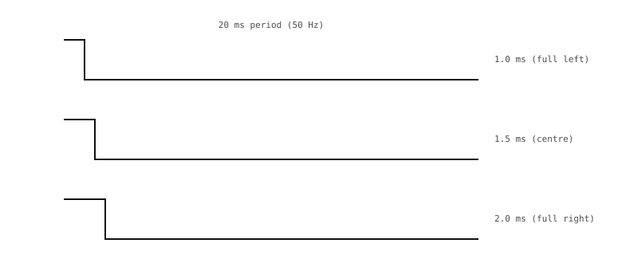

3.16. Styrning av servo¶
Ett hobbyservo (RC) är en liten växlad motor i ett förseglat hölje med inbyggd positionsstyrning i sluten slinga. Inuti höljet sitter en DC-motor, en reduktionsväxellåda, en potentiometer kopplad till utgångsaxeln, och ett litet drivkort som jämför potentiometerns avläsning mot ett börvärde som kommer in utifrån. Drivkortet kör motorn i den riktning som minskar felet, och stannar när positionen stämmer. Från kamerans sida syns inget av detta – du talar bara om för servot vart det ska.
3.16.1. PWM-signalen¶
Ett servo tar emot sitt börvärde som en PWM-signal med en fast bildrutefrekvens på 50 Hz, där pulsbredden väljer positionen:
En puls på 1,0 ms driver axeln till ena änden av sitt rörelseomfång.
En puls på 1,5 ms parkerar axeln i mitten.
En puls på 2,0 ms driver axeln till andra änden.
Allt däremellan mappas till en mellanliggande position.

Servots PWM-bildruta är 20 ms lång; pulsbredden (1,0 – 2,0 ms) väljer positionen.¶
Till skillnad från lysdioder och motorer medelvärdesbildar servot inte PWM-signalen. Pulsbredden själv är kommandot: servots interna logik mäter varje puls, ställer in sitt mål därefter, och kör motorn tills utgången stämmer. Pulskvoten som andel (mellan 5 % och 10 % över hela intervallet) är bara en bieffekt – det är den absoluta pulsbredden som spelar roll, vilket är vad programvaran behöver styra.
3.16.2. Inkoppling¶
Hobbyservon använder en treledarkontakt:
Spänning (vanligtvis röd): servots egen matning, typiskt 4,8 V till 6 V. Mata inte servot från kamerans 3,3 V-skena – den kan inte leverera stallströmmen, och skenan kommer att kollapsa.
Jord (vanligtvis svart eller brun): returvägen för servots spänning, kopplad till kamerans jord så att signalen också har en gemensam referens.
Signal (vanligtvis vit, gul eller orange): PWM-ledningen från kamerans GPIO.
3.16.3. Kod¶
duty_u16() skulle fungera, men den ställer in pulskvoten som en andel av perioden – opraktiskt för en signal där det är den absoluta pulsbredden som spelar roll och perioden är fast. duty_ns() ställer in pulsbredden direkt i nanosekunder:
from machine import PWM, Pin
servo = PWM(Pin("P7"), freq=50, duty_ns=1_500_000) # centre
Bärvågen är 50 Hz (period på 20 ms); den höga tiden under varje cykel är exakt 1500 µs. En liten hjälpfunktion gör mappningen från position till puls explicit:
def set_position(angle):
# angle: 0..180 degrees mapped to 1.0..2.0 ms
pulse_us = 1000 + (angle * 1000) // 180
servo.duty_ns(pulse_us * 1000)
set_position(0) # full one way
set_position(90) # centre
set_position(180) # full the other way
En långsam svepning över hela intervallet:
import time
for angle in range(0, 181, 5):
set_position(angle)
time.sleep_ms(20)
for angle in range(180, -1, -5):
set_position(angle)
time.sleep_ms(20)
Intervallet 1,0 – 2,0 ms är standarden, men många servon accepterar ett bredare intervall (ofta 500 µs till 2500 µs) för fullt rörelseomfång. Servots datablad anger de exakta pulsbreddsgränserna; värden utanför det intervallet kan slå motorn in i dess mekaniska ändlägen.
För ett servo med ett icke-standardiserat intervall, lyft ut gränserna till konstanter och parametrisera mappningen:
PULSE_MIN_US = 500 # full one way (from the data sheet)
PULSE_MAX_US = 2500 # full the other way
def set_position(angle):
span_us = PULSE_MAX_US - PULSE_MIN_US
pulse_us = PULSE_MIN_US + (angle * span_us) // 180
servo.duty_ns(pulse_us * 1000)